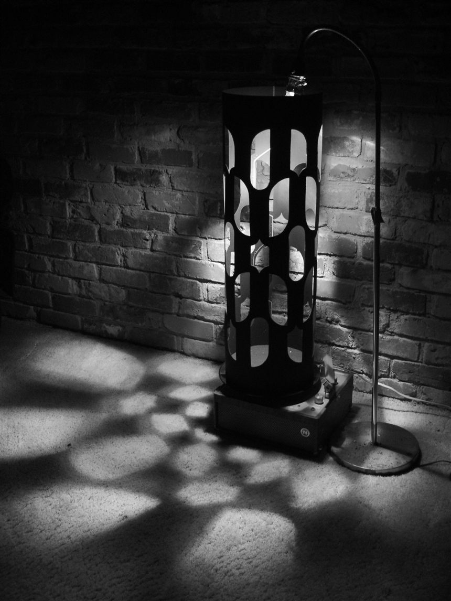

How it began
In the discount corner of a well-known bookshop I picked up Electric Dreams, the catalogue Tate published alongside its exhibition on art and technology before the internet. It was an impulse buy, half-price and heavy. Leafing through it later, my eye caught on two works by Brion Gysin, and stayed there. I did not know the name; I knew only that the marks on the page felt at once handmade and machined, ordered and coming apart.
That double quality was the spark. In all humility I sketched a first, cautious plan for what a small drawing library might do if it took those qualities seriously: treat shapes and words not as clean geometry but as fragile vector material, lines that hesitate, repeat, overshoot, break, and sometimes vanish, yet stay precise enough to send to a pen plotter. p5.gysin is that plan, still modest, still learning.
Brion Gysin (1916–1986)

Gysin worked across painting, poetry, performance, photography, music, and experimental film. The Musée d’Art Moderne de Paris describes an oeuvre at the meeting point of painting and writing, with cut-up, permutation, calligraphy, and the Dreamachine among its recurring procedures. That breadth matters here more than a heroic biography.
Cut and return
Gysin encountered the cut-up in Paris in the autumn of 1959. Text was cut into fragments and rearranged, allowing accident to enter before selection returned. The museum situates the procedure as a Dada revival and follows it through writing, image, sound, and film. Source: Musée d’Art Moderne de Paris.
In this library, textCutup() works on letter contours while GysinText.weave() works on fragments from several texts. Neither recreates a historical work. They expose cutting, displacement, and recombination as operations a sketch can repeat.
Permutation
Gysin’s permutation poems move the same words through changing positions. Their lives were visual and sonic: written arrangements, recorded voices, and machine poems. A 2026 study day connected to the Paris retrospective places these works from the 1950s through 1984 and treats combinatorics as part of their composition. Source: Musée d’Art Moderne de Paris / ENS Paris-Saclay.
GysinText.permute() keeps this narrow procedural question: what happens when the words remain and their order does not?
Writing, signs, grid
Across drawings and paintings, writing could be read as mark, rhythm, or structure. Centre Pompidou notes how variation and permutation found a visual form in the grid; the Paris retrospective places drawing, writing, and calligraphy at the centre of Gysin’s process. Source: Centre Pompidou.
The library answers with modest instruments: asemic(), letters(), symbols(), grid(), and lattice(). They make fields of marks. What those fields mean remains with the work made from them.
The Dreamachine

In 1960 Gysin developed the Dreamachine with mathematician Ian Sommerville: a slotted cylinder, a light source, and rotation on a turntable. Centre Pompidou records the device, its material construction, and its place beside Gysin’s cut-ups and permutations. Source: Centre Pompidou collection record.
p5.gysin does not simulate the Dreamachine. Its relevance here is structural: a repeated mechanism can produce an experience that is not fixed in one image.
What the name does not claim
p5.gysin is an independent study and drawing instrument. It is not affiliated with the artist’s estate or the institutions cited here. It is not a reconstruction, an archive of his work, or a claim to represent the full practice of Brion Gysin.
The library studies a limited set of procedures: cutting, permutation, rotation, repetition, interruption, and the passage between machine geometry and a drawn trace. The historical works remain the primary material. The code is a contemporary tool made in their wake.
Sources and the work itself
No historical quotation is reproduced on this page. The factual outline was checked against collection and exhibition material from the Musée d’Art Moderne de Paris and Centre Pompidou. The portrait belongs to the Carl Van Vechten collection at the Library of Congress. Tate’s Electric Dreams remains the personal point of entry described above.